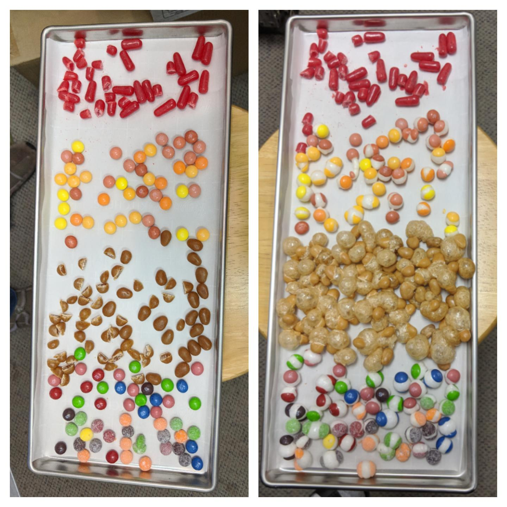
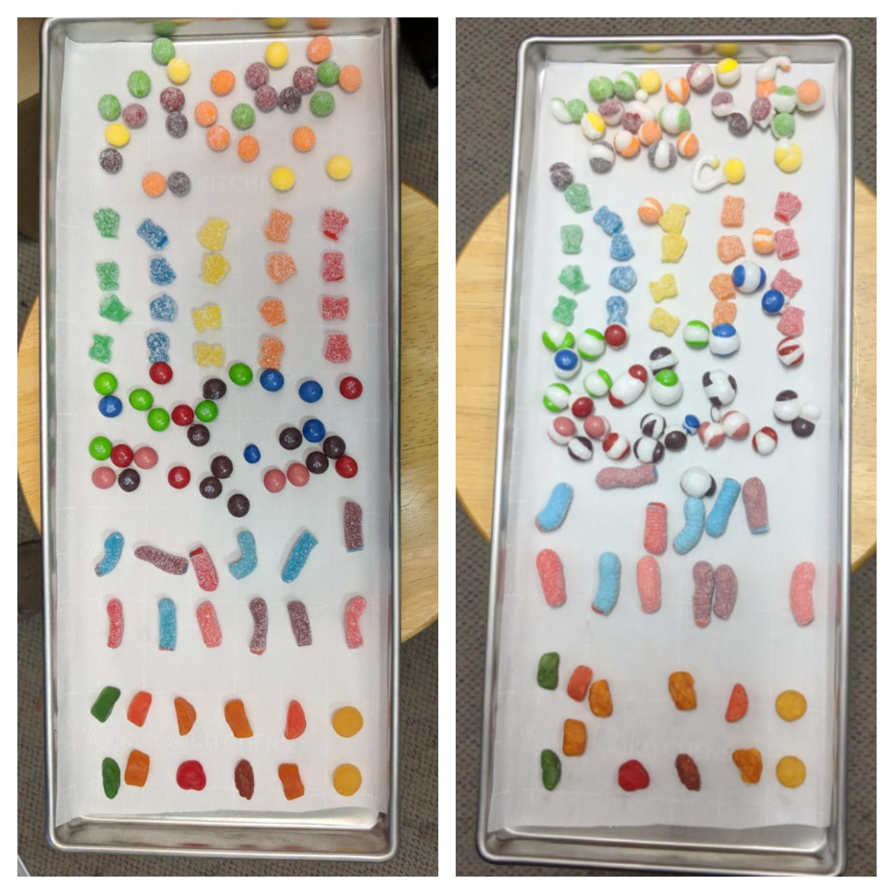
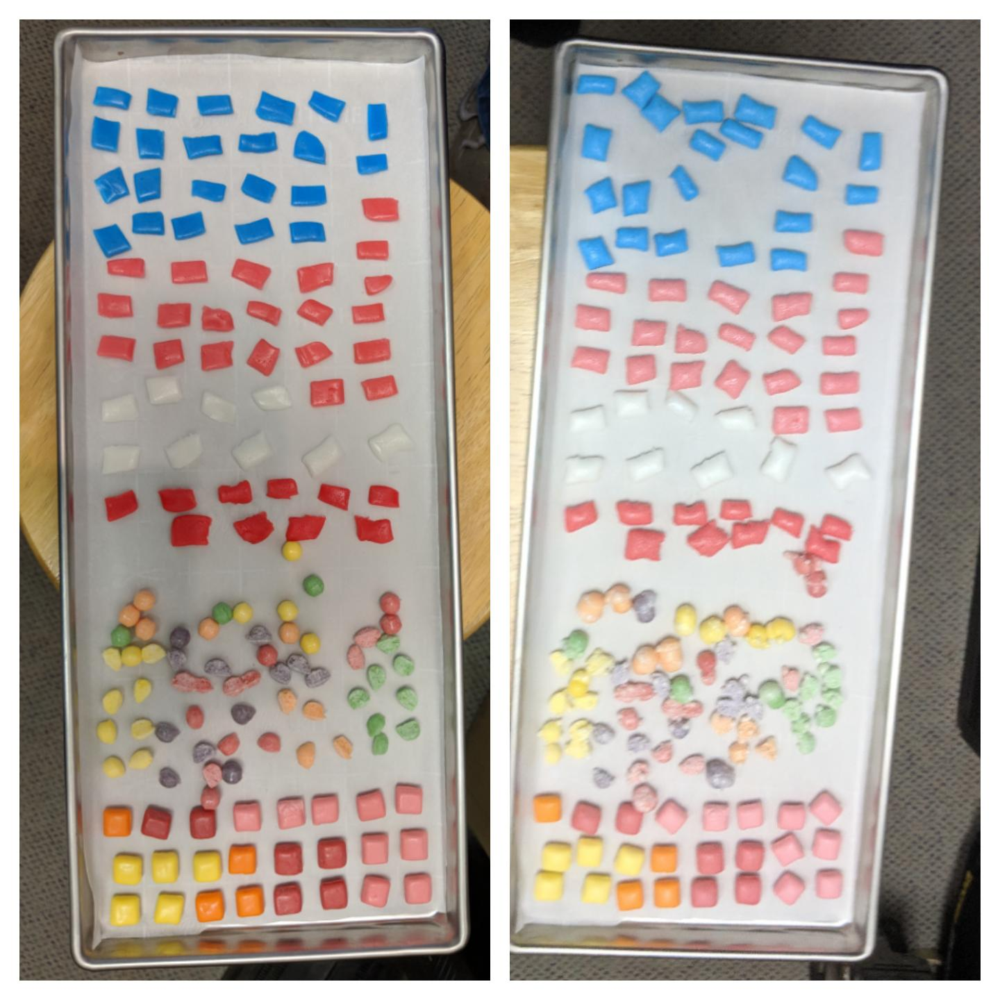
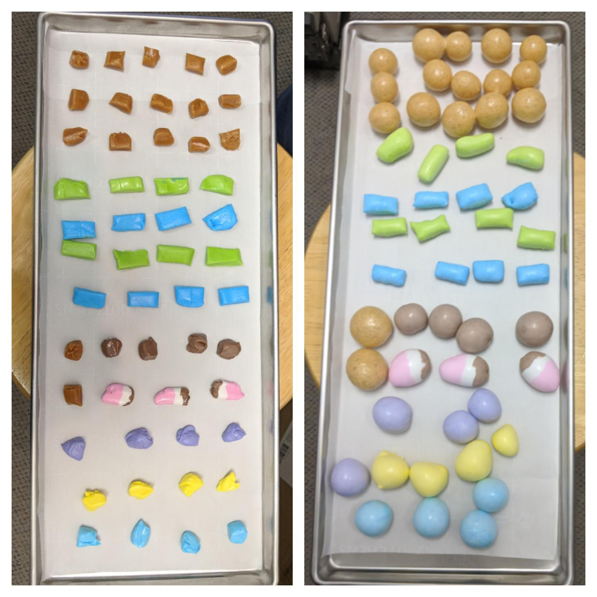

| Hot Tamales, Spicy Skittles, Sugar Babies, Wild Berry Skittles, Sour Skittles | Sour Skittles, Sour Patch Kids, Wild Berry Skittles, Sour Gummy Worms, fruit snacks |  |  |
| Airheads, Sour Skittles, Starburst Mini Unwrapped | Werther's Caramels, Laffy Taffy, Salt Water Taffy |
|  |  |
| Salt Water Taffy | |
 |
|